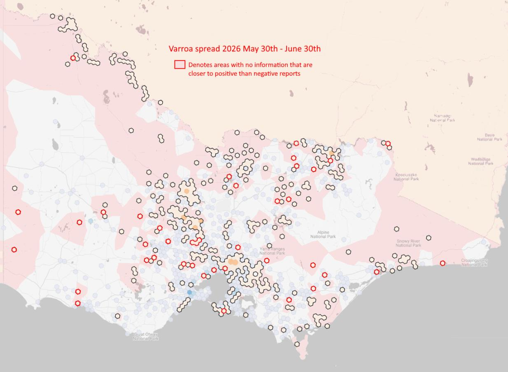

laboration across every region of Victoria will remain a key focus over the coming year. This commitment reflects our purpose and our promise — to build One Home. One Voice. One Guardian. and one strong VAA that supports beekeepers, both commercial and recreational, wherever they are across our state.
As president, I remain optimistic about the future of Victoria's beekeeping industry. While our industry continues to face significant challenges, including Varroa destructor and changing environmental conditions, I firmly believe we also have enormous opportunities. By working together, embracing innovation, supporting one another and maintaining a strong, united voice, we will continue to build an industry that is resilient, sustainable and respected.
I would also like to wish Elan Meyer every success as he represents Victoria at the International Meeting of Young Beekeepers in Belfast, Northern Ireland this month. The VAA was proud to support the Australian Youth Beekeeping Program as a Bronze Sponsor this year. Having met Elan during our Conference, I left feeling incredibly optimistic about the calibre of young people entering our industry.
Finally, thank you to every member who continues to support the Victorian Apiarists' Association. Whether you volunteer on a committee, attend branch meetings, participate in events or simply maintain your membership, you are helping ensure your VAA remains strong for future generations of Victoria's beekeepers.
It is a privilege to serve as your president, and I look forward to continuing this journey with you all over the year ahead.
Lindsay Callaway
